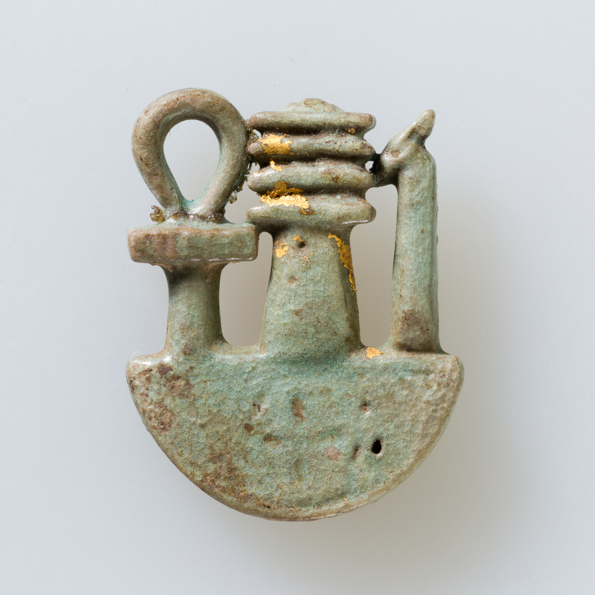
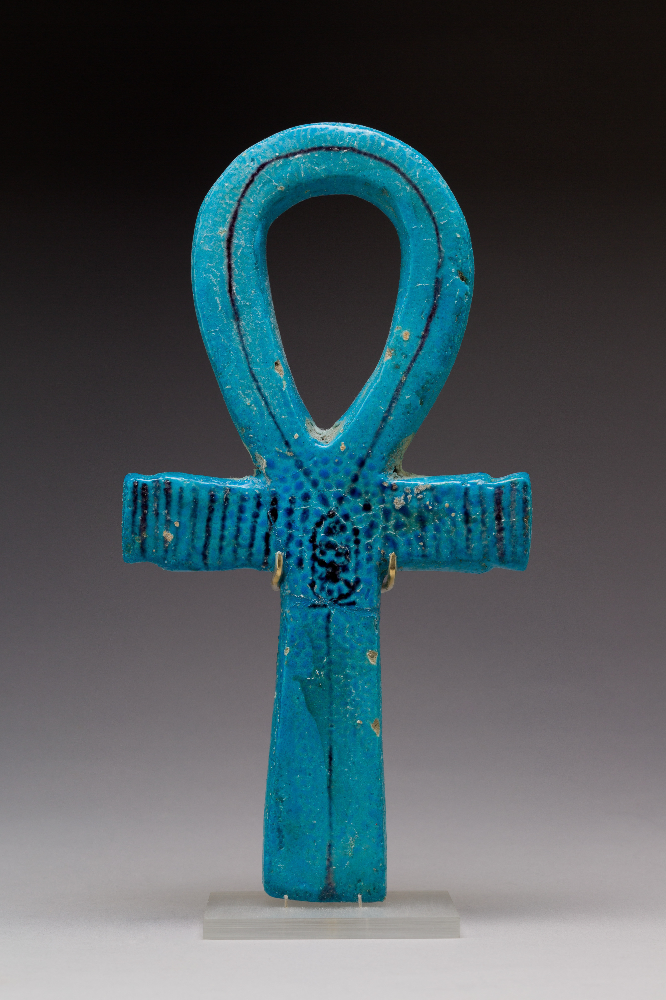
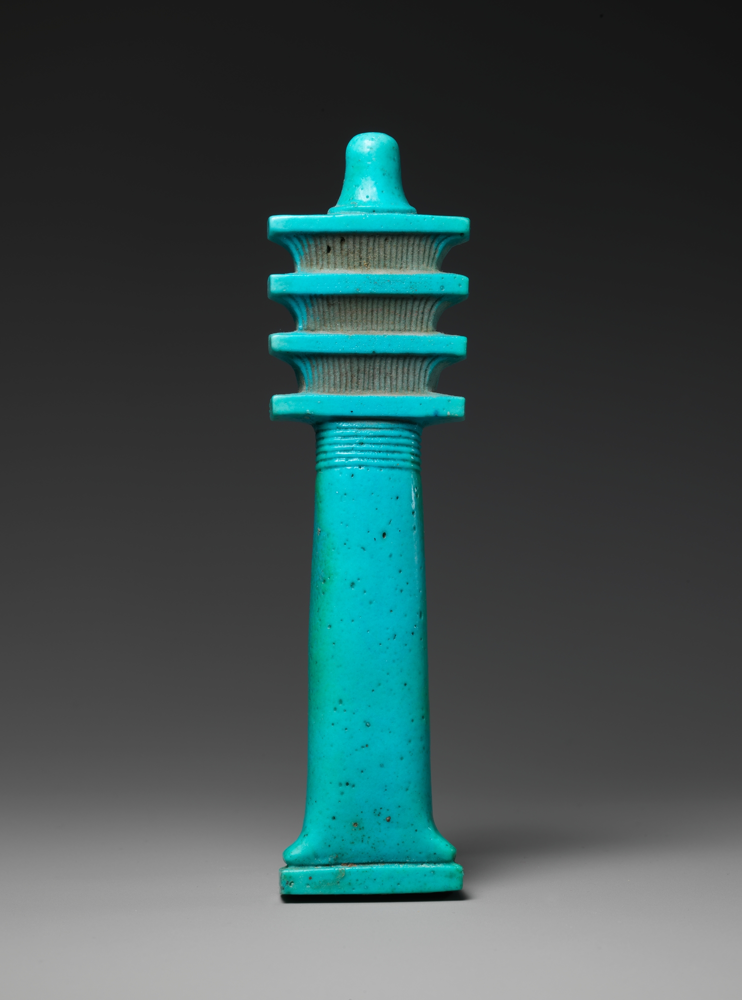
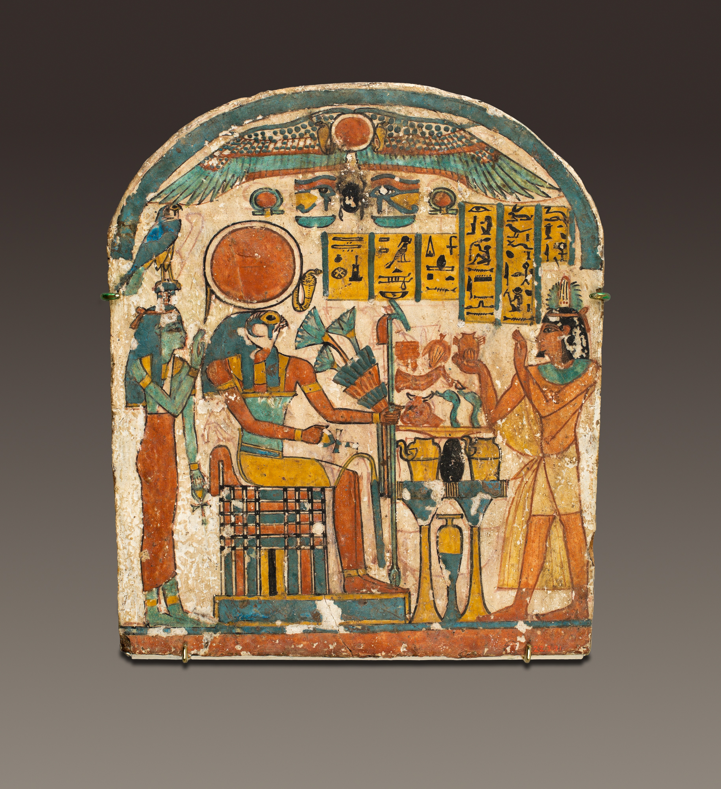
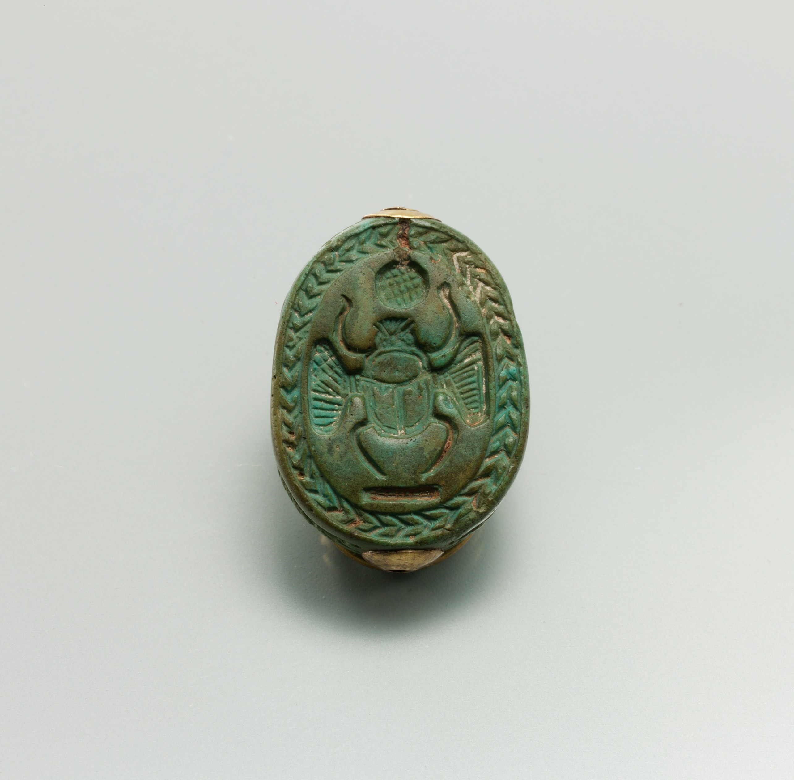
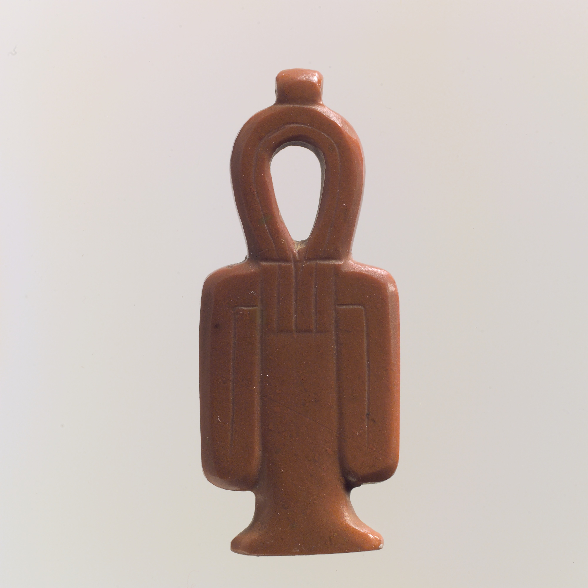
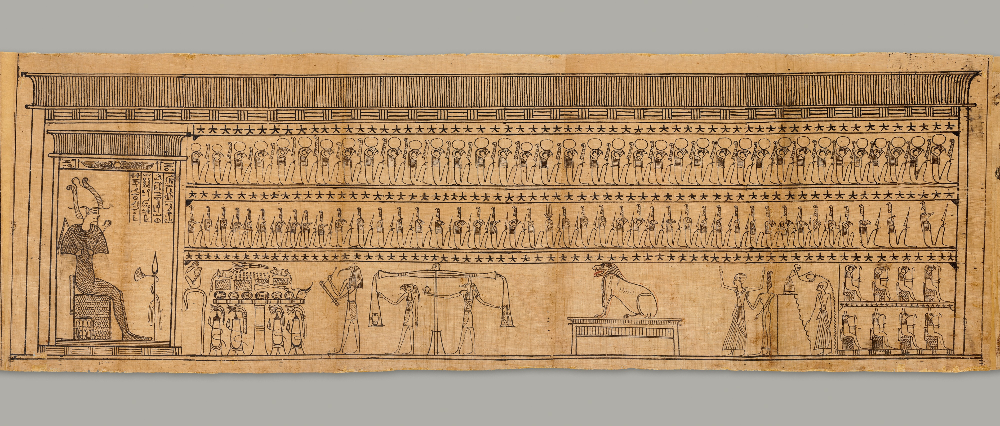
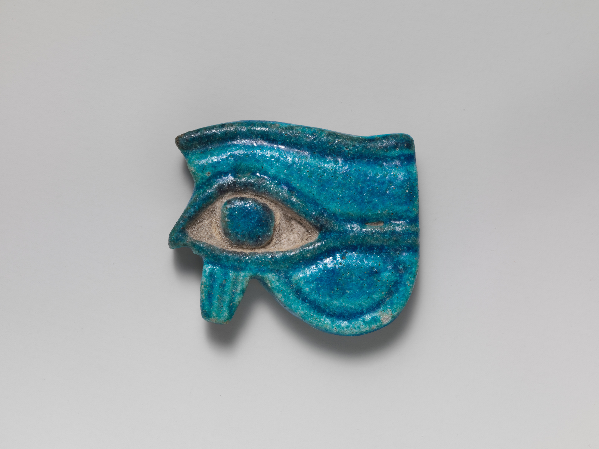
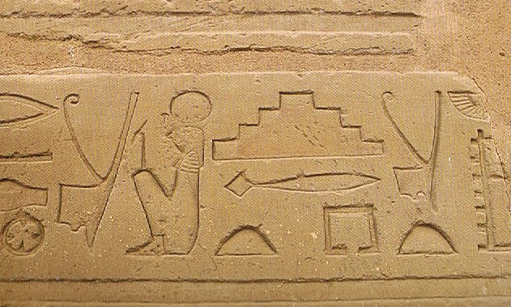

Introduction
Some of the most important ancient Egyptian symbols were:
The three most important symbols, often appearing in all manner of Egyptian artwork from amulets to architecture, were the ankh 𓋹, the djed 𓊽, and the was scepter 𓌀. These were frequently combined in inscriptions and often appear on sarcophagi together in a group or separately. In the case of each of these, the form represents the eternal value of the concept: the ankh represented life; the djed stability; the was power. Scholar Richard H. Wilkinson, noting the importance of form-as-function, relates the following:

Ankh, djed, was on neb basket. Late Period–Ptolemaic Period, 664–30 BC.
The ankh (life), djed (stability), and was (dominion) symbols depicted here on the sign for a heb bowl constitute a powerful combination of wishes that, before the first millennium, were offered by the king to a god or by a god to a king. Large complex inscribed examples of overlaid faience ankh, djed, and was elements from the time of the 25th and early 26th dynasty indicate the symbol is being associated with the Egyptian New Year, and one bears the name off Mentuemhat, the greatest official in the land.
A little known but fascinating inscription made at the command of the pharaoh Thutmose IV records the discovery by the king of a stone. The significance of this celebrated stone lay not in its being of rare material or appearance, the inscription tells us, but because "his majesty found this stone in the shape of a divine hawk". That an Egyptian king should place so much importance on a mere rock simply because of its shape is instructive, for it shows how alert the ancient Egyptian was to the shapes of objects and to the symbolic importance which the dimension of form could hold.
The Ankh 𓋹
The ankh is a cross with a looped top which, besides the concept of life, also symbolized eternal life, the morning sun, the male and female principles, the heavens and the earth. Its form embodied these concepts in its key-like shape; in carrying the ankh, one was holding the key to the secrets of existence. The union of opposites (male and female, earth and heaven) and the extension of earthly life to eternal, time to eternity, were all represented in the form of the looped cross. The symbol was so potent, and so long-lived in Egyptian culture (dating from the Early Dynastic Period in Egypt, c. 3150-c. 2613 BC), that it is no surprise it was appropriated by the Christian faith in the 4th century AD as a symbol for their god.

Ceremonial Implement in the Shape of an Ankh. New Kingdom, ca. 1400–1390 BC.
The ankh was used as a hieroglyph to write the words "live," "alive," or "life." It also became a popular symbol for life in general. In its center, the ankh-sign here features a cartouche (a protective oval-shaped ring) with the name of King Thutmose IV, in whose tomb it was found.
The origin of the ankh symbol is unknown, but Egyptologist E. A. Wallis Budge claims it may have developed from the tjet, the 'Knot of Isis,' a similar symbol with the arms at its sides associated with the goddess. Female deities were as popular, and seem to be considered more powerful (as in the example of the goddess Neith), in the early history of Egypt, and perhaps the ankh did develop from the tjet, but this theory is not universally accepted.
The ankh was closely associated with the cult of Isis, however, and as her popularity grew, so did that of the symbol. Many different gods are depicted holding the ankh and it appears, along with the djed symbol, in virtually every kind of Egyptian artwork from sarcophagi to tomb paintings, palace adornments, statuary, and inscriptions. As an amulet, the ankh was almost as popular as the scarab and the djed.
The Djed 𓊽
The djed is a column with a broad base narrowing as it rises to a capital and crossed by four parallel lines. It first appears in the Predynastic Period in Egypt (c. 6000-c. 3150 BC) and remains a staple of Egyptian iconography through the Ptolemaic Period (323-30 BC), the last to rule the country before the coming of Rome. Although understood as representing stability, the symbol served to remind one of the close presence of the gods as it also referenced the god Osiris and so was linked with resurrection and eternal life. The djed was thought to represent the god's backbone and frequently appears on the bottom of sarcophagi in order to help the newly arrived soul stand up and walk into the afterlife.
The symbol has also been interpreted as four columns rising behind each other, the tamarisk tree in which Osiris is enclosed in his most popular myth, and a fertility pole raised during festivals, but in each case, the message of the form goes back to the stability in life and hope in the afterlife, provided by the gods.

Djed Pillar Amulet. Late Period, 664–332 B.C.
The djed-pillar is a stylized representation of an early fetish that probably consisted of plant material. From the beginning of ancient Egyptian history, it was used as a symbol signifying permanence. Later it was associated with the god Osiris and identified as his backbone. The djed-pillar here was probably used as a funerary amulet to ensure permanence and to closely connect the deceased to Osiris, who was revived after death.
The djed-pillar was associated with the god Osiris and identified as his backbone. The djed-pillar here was probably used as a funerary amulet to ensure permanence and to closely connect the deceased to Osiris, who was revived after death.
In the interpretation of the symbol as four columns, the number most frequently appearing in Egyptian iconography is represented: four. The number symbolized completeness and is seen in art, architecture, and funerary goods such as the Four Sons of Horus of the canopic jars, the four sides of a pyramid, and so on. The other interpretations likewise symbolize concepts associated with the Osiris-Isis myth. The djed as the tamarisk tree speaks of rebirth and resurrection as, in the myth, the tree holds Osiris until he is freed and brought back to life by Isis. The fertility pole is also associated with Osiris who caused the waters of the Nile River to rise, fertilize the land, and flow again to its natural course. In each case, whatever object it is claimed to represent, the djed was a very powerful symbol which was often coupled with another: the was scepter.
The Was Scepter 𓌀
The was scepter is a staff topped with the head of a canine, possibly Anubis, by the time of the New Kingdom (1570-1069 BC) but earlier a totemic animal like a fox or dog. The was scepter evolved from the earliest scepters, a symbol of royal power, known as the hekat, seen in representations of the first king, Narmer (c. 3150 BC) of the Early Dynastic Period (c. 3150-2613 BC). By the time of the king Djet (c. 3000-2990 BC) of the First Dynasty, the was scepter was fully developed and symbolized one's dominion and power.
This quartzite relief appears to depict the ritual called "Striking the Ball". A king wearing the royal nemes head-cloth with uraeus and the traditional bull’s tail stands on the right. Between him and a goddess opposite is the god hieroglyph and, lower down, a round ball. The goddess wears a uraeus on her forehead and holds an ankh and a was scepter. The latter is by this time usually held only by gods, although precursors of this particular scene show the goddess with a was, and certain important goddesses may hold was scepters.
The soft form of the raised relief and the goddess’s jutting breast are indications the relief dates to the Ptolemaic Period.
The scepter was usually forked at the bottom but this changed according to which god or mortal was holding it and so did the color of the staff. Hathor, associated with the cow, holds the scepter forked at the bottom in the shape of cow horns. Isis holds a similar object but with the traditional fork representing duality. The was scepter of Ra-Horakhty ('Horus in the Horizon'), god of the rising and setting sun, was blue to symbolize the sky while that of the sun god Ra was represented with a snake attached to it symbolizing rebirth, as the sun rose again each morning.

Stela of Saiah. Third Intermediate Period, ca. 825–712 B.C.
This is one of four stelae found near the doorway of the brick chapel of the family of Saiah, a wab, or purification priest of Amun who lived during the latter half of the 22nd Dynasty. All of the stelae are made of wood, painted in green, red, yellow and black on a white gesso ground.
Inscribed for Saiah himself, the deceased presents a heart-shaped object to a figure of the falcon-headed god Re-Harakhty-Atum, who sits on a cubic throne atop a reed mat holding a blue-colored was scepter.
Each god's was scepter denoted their particular dominion in one way or another. The god Ptah, from the Early Dynastic Period, holds a was scepter which combines all three symbols, the ankh, djed, and was, with a circle at the bottom symbolizing unity. The combination of the symbols, naturally, combined their power which was only fitting for this god who was associated with creation and known as the 'sculptor of the earth.' The three symbols at the top of Ptah's staff, along with the circle at the bottom, presented the overall meaning of completeness, totality, in the number four.
Significance of Number in Symbols
The combination of the symbols always had a specific meaning. Wilkinson writes, "One of the most important principles for understanding the numerical symbolism of Egyptian representational works is that of the extension of numbers" (138). A two-dimensional work of art, such as an image of a god or goddess, is often depicted in such a way that the number four is implied and this practice applies to many numbers so that, as Wilkinson notes, "the number actually depicted must be mentally 'extended' in order to properly understand its significance in the composition" (138). An example of this is representations of the djed as four columns each rising behind the other. Although the number four represents completeness, the multiplication of four extending toward the horizon would add the equally important concept of eternity. The djed symbol used throughout the pyramid complex of Djoser at Saqqara is a prime example of this. At Djoser's complex, the djed appears on temple lintels appearing to hold up the sky. If the djed is interpreted as four columns multiplied infinitely then the concept of eternity is emphasized through the architecture. The ankh, djed, and was in architecture are frequently employed in such a way as to double, triple, or quadruple their number for just this kind of emphasis. Wilkinson writes:
A common example of the principle where two represents four is found in the pair of was sceptres which were used to depict the pillars of the sky and which were shown standing on the ta or earth hieroglyph, and supporting the pet or sky hieroglyph. This group was frequently used as a framing device around the sides of temple reliefs, symbolically placing the compositions in a cosmic setting. Because these representations are only two-dimensional, however, an abbreviated view of the various elements is given.
These symbols, singly or together, adorned the items the Egyptians used regularly in their daily lives. Amulets were worn by every class of Egyptian society with the djed among the most popular followed by the scarab, the ankh, the tjet, the shen, the was, and others. These other potent symbols were frequently paired, or associated, with the three most often used.
The Scarab 𓆣
The scarab is the famous beetle image seen in Egyptian art and iconography which represents the Scarabaeus sacer, a species of the dung beetle. The dung beetle was associated with the gods because it rolled dung into a ball in which it laid its eggs; the dung served as food for the young when they hatched. In this way, life came from death.

Scarab. New Kingdom, ca. 1550–1479 B.C.
This scarab was found in the same coffin as the statuettes of Amenemhab and Huwebenef. The back type, which has no indication of the beetle's wing cases, is typical of Second Intermediate Period scarabs found in the Nile Delta, and the rope pattern framing the design on the base had been used since the Middle Kingdom. The winged scarab on the base is a new feature that becomes more common during the reigns of Hatshepsut and Thutmose III. The notches on the beetle's carefully delineated wing cases are found regularly on the backs of scarabs dating to their joint reign.
They were closely identified with the god Khepri who was thought to roll the ball of the sun across the sky, keep it safe in its travels through the underworld, and push it up into the dawn the next day. When Ra became the pre-eminent sun god, Khepri continued in this role as an assistant. Scarabs became popular amulets during the First Intermediate Period (2181-2040 BC) and remained so for the duration of Egypt's history until the rise of Christianity.
The Tjet 𓎬
The tjet (tiet, tyet), also known as 'the Knot of Isis' and 'the Blood of Isis' resembles an ankh with the arms at its side. The symbol dates to the Old Kingdom of Egypt (c. 2613- c. 2181 BC) but is probably older. The tjet has been interpreted as female genitalia, the folds of a woman's dress, and the knot of a girdle but, in every case, is associated with the goddess Isis.

Tit (Isis knot) amulet. New Kingdom, ca. 1550–1275 B.C.
The tit symbol (pronounced teet) illustrates a knotted piece of cloth whose early meaning is unknown, but in the New Kingdom it was clearly associated with the goddess Isis, the great magician and wife of Osiris. By this time, the tit was also associated with blood of Isis. The tit sign was considered a potent symbol of protection in the afterlife and the Book of the Dead specifies that the tit be made of blood-red stone, like this example, and placed at the deceased's neck. Knots were widely used as amulets because the Egyptians believed they bound and released magic.
It represented protection and security and was often paired with the ankh, thus offering the dual security of both Isis and Osiris. The tjet was frequently carved on bed posts and the walls of temples and was most popular during the time of the New Kingdom of Egypt when the cult of Isis was at its peak.
The Crook & Flail 𓋾𓌄
The crook and flail are among the most famous symbols from ancient Egypt symbolizing the power and majesty of the king. Both these items were associated with Osiris and symbolized his early rule of the land. The symbols appear in the Early Dynastic Period during the reign of the first king, Narmer (c. 3150 BC) and linked the king with the mythical first king of Egypt Osiris.

Book of the Dead of the Priest of Horus, Imhotep (Imuthes). Early Ptolemaic Period, ca. 332–200 BC
This section shows Osiris, on the right, under a canopy, holding the crook and flail.
Imhotep's Book of Coming forth by Day, commonly known as a Book of the Dead, was designed to help Imhotep make a successful transition from death to eternal life, and to ensure his safety and well-being in the realm of the dead. Written in a cursive script known as hieratic and read from right to left, it is divided into 182 columns, each containing one or more spells, incantations, or prayers. A continuous frieze of vignettes along the top, as well as larger drawings filling the height of the papyrus, illustrate or substitute for individual spells. Neither texts nor images follow a narrative sequence, but instead represent a compilation of spells grouped, to some extent, by theme.
According to the myth, Osiris' kingdom was usurped by Set, who murdered him, but he was resurrected by his sister-wife Isis. She bore him a son, Horus, who defeated Set and restored order to the land. The king was associated with Horus (with some exceptions) during life and with Osiris in death. Once Horus avenged his father and defeated Set, he took the crook and flail of his father to represent the legitimacy of his reign, and so it was for the kings of Egypt who identified with these gods.
The crook was an early tool used by shepherds while the flail was a means of herding goats and also harvesting an aromatic shrub known as the labdanum. Since Osiris was originally an agricultural/fertility deity, he was associated with both implements from the Predynastic Period and they served as reminders of the past and the importance of tradition as well as, obviously, symbols of the legitimacy and power of the king.
The Shen 𓍶
The shen is a circle of rope, knotted, to form an unbroken, circle symbolizing completeness, infinity, and serving as protection. The name comes from the Egyptian word for 'encircle.' Shen amulets were frequently worn for protection and shen images appear on a kind of stand, the whole resembling the Greek omega, though this 'stand' should be understood as the knotted rope completing the circle.
Stela of Saiah. Third Intermediate Period, ca. 825–712 B.C.
Detail of the stela showing the wedjat or udjat eye and a shen ring, a symbol of eternity.
The shen probably developed during the Old Kingdom or First Intermediate Period of Egypt but became popular during the Middle Kingdom (2040-1782 BC) and remained so. The god Horus and the goddesses Nekhbet and Isis are frequently seen holding the shen but other gods are also associated with the symbol. The shen appears on sarcophagi and in temples and tombs as well as personal inscriptions. The Egyptians greatly valued symmetry and completeness, and so the shen was quite popular and often represented.
The Udjat Eye 𓂀
The udjat is another well-known symbol from Egypt: the Eye of Ra. The symbol of the eye is associated with the protective goddess Wadjet during the Predynastic Period and continued to be even though it was later more regularly linked to Horus, Ra, and others through the motif of the Distant Goddess.
The distant goddess story has many forms in Egyptian mythology but one consistent plot: a goddess in some way rebels against the king of the gods, leaves her home and responsibilities behind to journey to a far-off land and must be brought back (or tricked into returning) thus initiating some kind of transformation. The udjat either represented the goddess or was sent to retrieve her and could take many forms. As the Eye of Ra it was understood to symbolize his watchful presence over creation and is frequently depicted in myths (like those of the distant goddess) being sent forth to gather information for Ra. The udjat remained a consistently potent symbol throughout Egypt's history.

Faience Wedjat-eye amulet. ca. 1090–900 BC.
The Egyptian god Horus was usually depicted in human form but with the head of a falcon. His eye was taken to represent the sun, whose setting and rising symbolized loss and recovery—a fitting sign for an amulet.
Book of the Dead of the Priest of Horus, Imhotep (Imuthes). Early Ptolemaic Period, ca. 332–200 BC.
The left-most image shows a portion of the Book of the Dead with the udjat eye.
The next image shows horus standing standing in front of the sesen.
The Sesen 𓆸
The sesen is the lotus flower which appears so often in Egyptian art and symbolizes life, creation, rebirth and, especially, the sun. The symbol dates to the Early Dynastic Period but became most popular from the Old Kingdom onwards. The lotus flower closes at evening and sinks down beneath the water, then at daybreak, it emerges to open again; this pattern identified it with the sun and, therefore, with life.
The flower also represented rebirth for the same reason and was associated with the god Osiris. The Four Sons of Horus, regularly represented on canopic jars, are often depicted standing together on a lotus in the presence of Osiris. The lotus flower appears in many different types of Egyptian art from faience statuary to sarcophagi, temples, shrines, and on amulets. It was the symbol of Upper Egypt as the papyrus plant symbolized Lower Egypt and the flower is sometimes depicted with its stem entwined with that of the papyrus plant.
The Ben-Ben 𓊎
The ben-ben was the primordial mound upon which the god Atum stood at the beginning of creation. It is easily the best-known symbol from ancient Egypt, after the ankh, even if one does not recognize the name. The pyramids of Egypt, wherever one finds them and from any age, represent the ben-ben as they rise from the earth toward the heavens.

The mythical Benben stone was frequently depicted in hieroglyphs by the form of a stepped pyramid and also as a true pyramidion.
According to one version of the Egyptian creation myth, in the beginning of time, there were only the dark waters of chaos in constant motion until the ben-ben rose as the first dry land. Atum (or in some stories Ptah or Ra) stood on the ben-ben to begin the work of creation. The pyramids and other similar structures symbolized both creation and eternity by invoking the imagery of this myth.
The ben-ben as a symbol dates from the Early Dynastic Period but became more widespread during the Old Kingdom, the time of the great pyramid builders when the monuments at Giza were constructed. It may have been worn as an amulet but more likely was among the works of art mass produced during the First Intermediate Period as a statuette. The ben-ben appears in many inscriptions from the Old Kingdom through the Late Period (c. 525-323 BC) and was also engraved on temple walls, tombs, and sarcophagi.
Other Symbols
There were many other important symbols throughout Egypt's history. The bennu bird 𓅞, for example, was the model for the Greek phoenix, and symbolized resurrection. The white ostrich feather 𓆄 symbolized the goddess Ma'at but also the concept of balance and truth she stood for. The Tree of Life stood for knowledge, purpose, and destiny.
Book of the Dead of the Priest of Horus, Imhotep (Imuthes). Early Ptolemaic Period, ca. 332–200 BC.
A detail from Anubis-Egyptian-Book-of-the-Dead shows Ma'at, symbolized by a white feather, on a scale with the jackal-headed Anubis.
Stela of Saiah. Third Intermediate Period, ca. 825–712 BC.
A detail from the stela of Saiah, showing a cobra with a rearing head.
Snakes and serpents represented transformation and change. The cobra was a protective image, associated early with the goddess Wadjet, who drove off the enemies of Ra; with hood extended and rearing to strike, the cobra became the insignia of kings and was worn on the uraeus, the royal headdress.
Another symbol associated with the monarch - and one of the most important and ubiquitous - was the winged solar disk known as the Horus Behdety or Horus of Behdet, symbolizing kingship, power, the flight of the soul, and divinity. The symbol is among the oldest in the world and variations of it are seen in many different cultures. In Egypt, it seems to have at first represented the syncretization of the god of the midday sun, Behdety (also given as Behedeti) and the sky god Horus. In time, it came to be associated with the supreme power of Horus and his representative on earth, the pharaoh.
Conclusion
Symbols in a largely illiterate society serve the vital purpose of relaying the most important values of the culture to the people generation after generation & so it was in ancient Egypt.
The crowns of Egypt in art also have distinct meaning and symbolism. The Red Crown (Deshret) symbolized Lower Egypt, the White Crown (Hedjet), Upper Egypt, and the red and white Double Crown (Pshent), a unified Egypt. Images of the king in battle show him in a blue crown (a Khepresh) invoking the power of the Nile River and the heavens through its color. The god Osiris had his own crown, the Atef, a tall hedjet crown adorned on each side with ostrich feathers and topped by a gold sun disc.
All of these symbols contributed to the rich culture of ancient Egypt and, although they were religious in nature, were never considered 'religious symbols' as a modern mind would interpret the term. In the present day, especially in western countries, religion is considered a separate sphere, distinct from one's role in secular society, but in Egypt, there was no such separation. The priests and priestesses of the Egyptian deities, the kings, scribes, and nobility made use of these symbols regularly, of course, but they appear as amulets, inscriptions, and on statuary of every class of Egyptian society from the greatest king to the most modest member of a community.